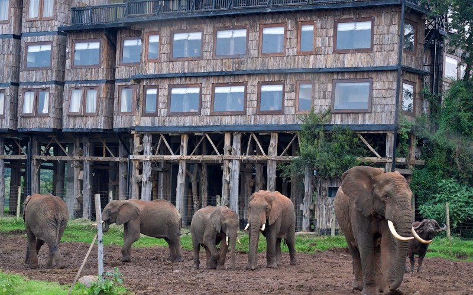
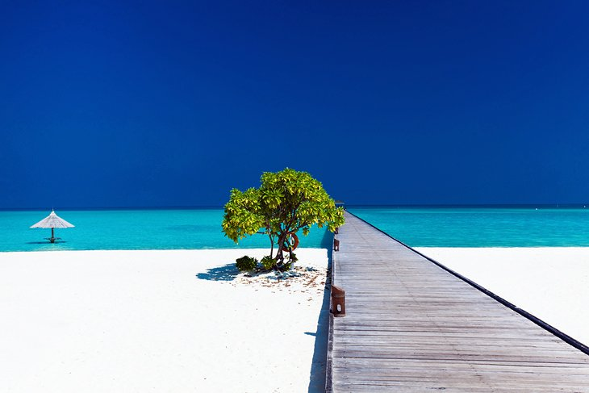

HAPPY TRAILS TRAVEL AGENCY is the leading provider for budget tour packages in Kenya
If you want to tour, have fun, learn and meet new friends, everyday, this is the company to use
Aberdare national park is an exciting tourist destination. THe park provides a habitat for elephants, black rhinos, leopards, spotted hyenas, warthogs and bushbucks e.t.c
Check out Aberdare national park to see the exciting attractions at the park.Dreamy beaches, silky warm seas, lush scenery, and endless sunshine: These are some of the top ingredients of the ideal tropical vacation
Maldives tops the list of the ideal tropical holiday destinations.
If slipping into the crystal-clear, soul-warming sea is a top criteria for your perfect tropical vacation, this is the place to do it, as water comprises 99 percent of the Maldives.